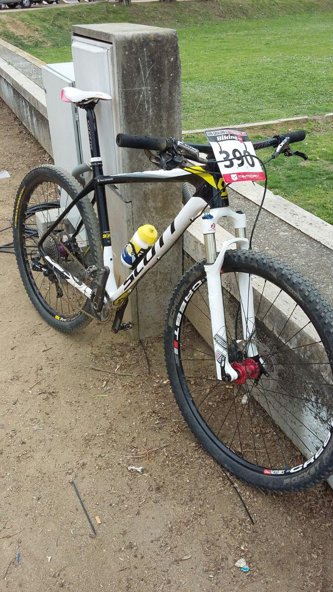
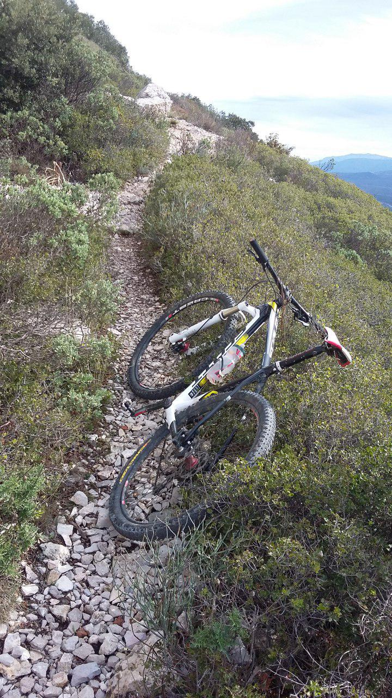
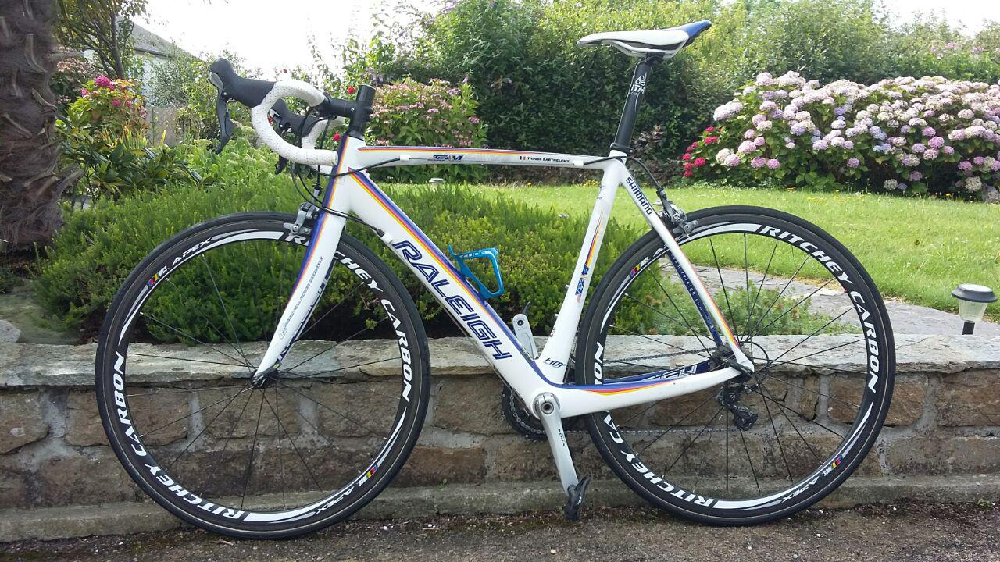
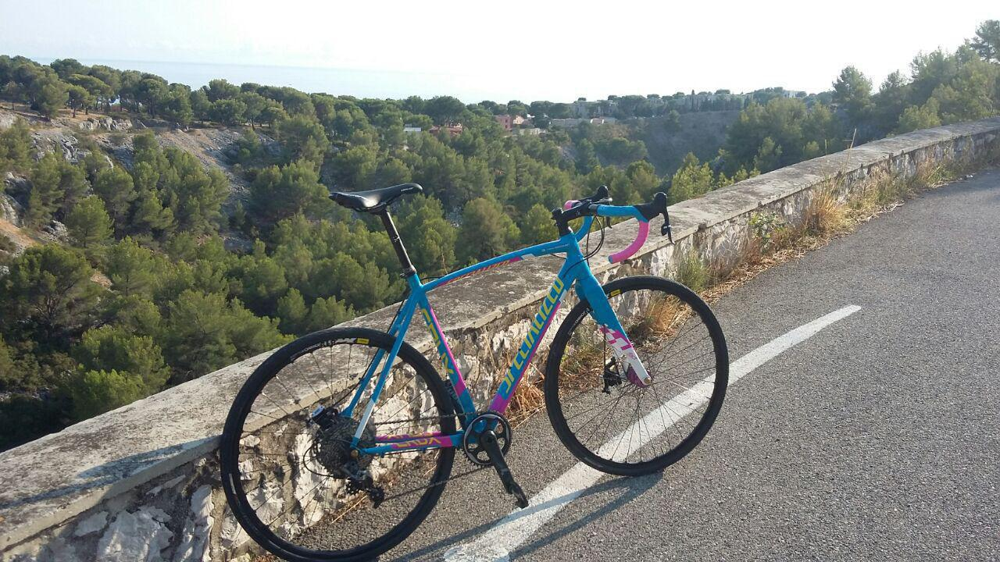
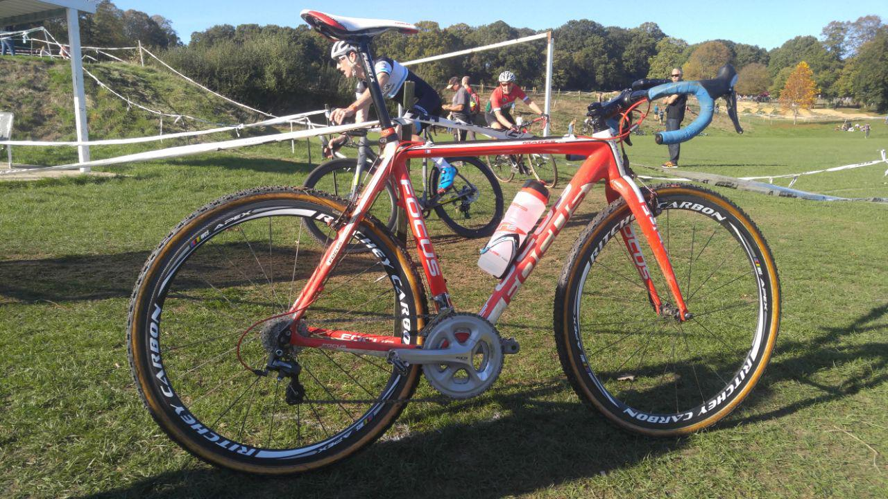
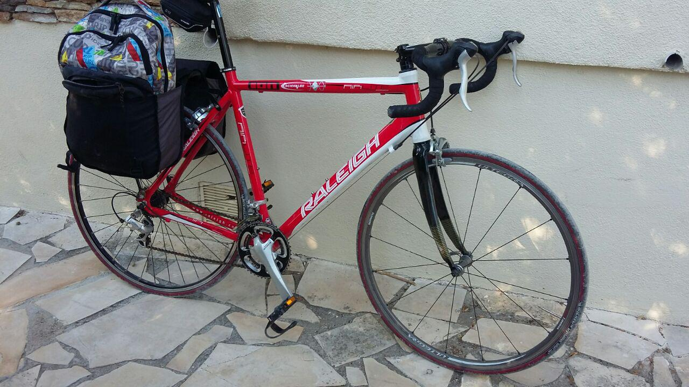

I've done a lot of MTB, Road and Cyclocross competition over the years. Here are all of my trusty steeds!
| Main MTB | ||
|   | Year Acquired | 2015, Rebuilt 2016 |
| Brand | Scott | |
| Frame Model | Scale 930 XL 2013 (Previously 910 M 2013) | |
| Fork | Rockshox Reba RLT 29 | |
| Crankset | SRAM XX1 36t | |
| Front Derailleur | - | |
| Rear Derailleur | SRAM GX 1x | |
| Chain | KMC X11-EL Gold | |
| Cassette | Shimano XT 11-42T | |
| Shifters | SRAM GX | |
| Handlebars | Syncros FL1.5 T-Bar | |
| Stem | Bontrager RL 100mm | |
| Seatpost | Syncros FL1.5 | |
| Saddle | Selle San Marco Concor Racing XSilite | |
| Brakes | Shimano XT 180mm/160mm | |
| Grips/Bar Tape | Ritchey WCS Truegrip Foam | |
| Front Wheel | Stans Crest 29 on Hope Pro 4 Red, Custom | |
| Rear Wheel | Syncros, DT Swiss XR 2.0 29 | |
| Tires | Schwalbe Rocket Ron EVO 2.1 | |
| Road Bike | ||
|  | Year Acquired | 2013 |
| Brand | Raleigh | |
| Frame Model | SP Team 2013 | |
| Fork | - | |
| Crankset | Shimano Ultegra 6700 53-39t | |
| Front Derailleur | Shimano Ultegra 6700 | |
| Rear Derailleur | Shimano Ultegra 6700 Short Cage | |
| Chain | Shimano Ultegra | |
| Cassette | Shimano Ultegra 11-27t | |
| Shifters | Shimano Ultegra 6700 STI | |
| Handlebars | FSA Energy 42cm White | |
| Stem | ITM Alutech 110mm | |
| Seatpost | ITM Alutech | |
| Saddle | Selle San Marco Concor Racing | |
| Brakes | Shimano Ultegra 6700 | |
| Grips/Bar Tape | ITM (unknown) | |
| Front Wheel | Shimano Ultegra 6700 | |
| Rear Wheel | Shimano Ultegra 6700 | |
| Tires | Michelin Pro 4 23mm | |
| Training Cyclocross Bike | ||
|  | Year Acquired | 2016 |
| Brand | Specialised | |
| Frame Model | Crux E5 (Frameset Exclusive Colour Scheme) | |
| Fork | Crux FACT Carbon | |
| Crankset | SRAM Force CX1 42t | |
| Front Derailleur | - | |
| Rear Derailleur | SRAM Force CX1 | |
| Chain | SRAM Force | |
| Cassette | SRAM Force CX1 11-32t | |
| Shifters | SRAM Force CX1 | |
| Handlebars | Fi'zi:k Cyrano R3 44cm | |
| Stem | Fi'zi:k Cyrano R5 100mm | |
| Seatpost | Fi'zi:k Cyrano R3 | |
| Saddle | Selle San Marco Concor | |
| Brakes | TRP HY/RD | |
| Grips/Bar Tape | Specialised | |
| Front Wheel | Mavic XM 819 on Hope Pro 4 Purple, Custom | |
| Rear Wheel | Mavic XM 819 on Hope Pro 4 Purple, Custom | |
| Tires | Challenge Limus 33 Open Tubular | |
| Racing Cyclocross Bike | ||
|  | Year Acquired | 2015 |
| Brand | Focus | |
| Frame Model | Mares CX1.0 2013 | |
| Fork | Mares CX1.0 | |
| Crankset | FSA Energy w/ Hope 42t, Shimano 105 5800 36-53t | |
| Front Derailleur | - , Shimano Ultegra 6700 | |
| Rear Derailleur | Shimano Ultegra 6700 Short Cage (3rd one D:) | |
| Chain | KMC X10-EL | |
| Cassette | Shimano Ultegra | |
| Shifters | Shimano Ultegra 6700 STI | |
| Handlebars | FSA Energy 42cm | |
| Stem | Fi'zi:k Cyrano R3 | |
| Seatpost | Planet X Light | |
| Saddle | Selle San Marco Concor Racing Xsilite | |
| Brakes | TRP Shorty Ultimate, Swissstop Yellow Brake Pads | |
| Grips/Bar Tape | Deda Elementi Blue | |
| Front Wheel | Ritchey Carbon WCS 38mm, Fulcrum Racing 3 | |
| Rear Wheel | Ritchey Carbon WCS 38mm, Fulcrum Racing 3 | |
| Tires | Challenge Limus 33 Tubular, Michelin Pro 4 23mm | |
| Commuter | ||
|  | Year Built | 2016 |
| Brand | Raleigh | |
| Frame Model | Airlite 200 | |
| Fork | Unknown Carbon | |
| Crankset | Shimano Sora 3500 34-46t | |
| Front Derailleur | Shimano Sora 3500 | |
| Rear Derailleur | Shimano Sora 3500 Short Cage | |
| Chain | Shimano | |
| Cassette | Shimano Sora 3500 11-25t | |
| Shifters | Shimano Sora 3500 STI | |
| Handlebars | Carrera Virtuoso | |
| Stem | Carrera Virtuoso | |
| Seatpost | Carrera Virtuoso | |
| Saddle | Selle San Marco Concor Racing | |
| Brakes | Shimano 105 5800 Dual-Pivot | |
| Grips/Bar Tape | Deda Elementi Black | |
| Front Wheel | Shimano Ultegra | |
| Rear Wheel | Decathlon | |
| Tires | Michelin Dynamic Sport | |